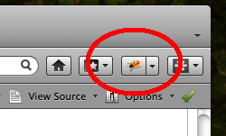
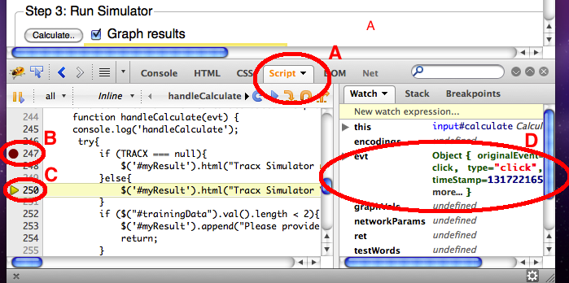
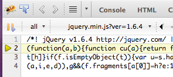
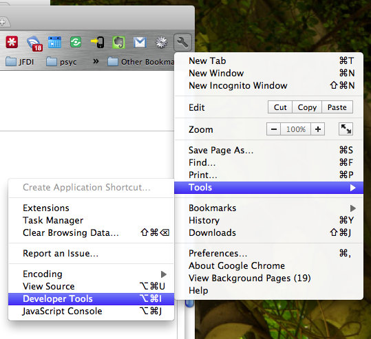
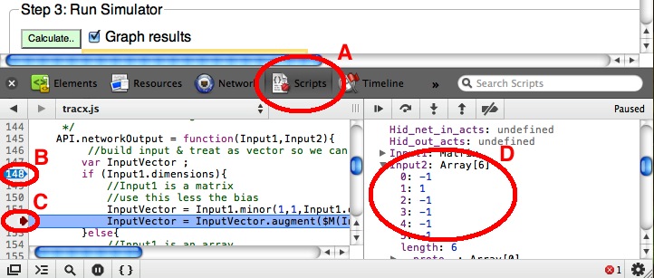
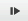

How to run the TRACX online simulator in debug mode.
This simulator lets you train and test a TRACX model with your own
data. It also lets you adjust the network parameters and see how
these affect learning. However, it will sometimes be useful to step
through the code yourself. This guide helps you use your browser's
debug tools.
Contents:
A note on code organisation
Firefox + Firebug
Google Chrome
Internet Explorer
Code Editing
A note on code
organisation
The
code for this simulation is divided across a number of different
files. Your browser loads all the appropriate files :
- index.html - contains
the html to lay out the main page plus some javascript to call
the TRACX simulator and display the results.
- tracx.js -
self-contained javascript module that contains all the code to
train and test TRACX networks.
3-rd party code
Firefox + Firebugra
Step 0: Before starting, we
recommend you upgrade to a recent version of your browser; Mozilla Firefox vers. 4
or higher.
Step 1: Download and install
the Firebug plugin.
Step 2: Click on the
Firebug toolbar button to launch the debug console. As shown here. 
Step 3: Launch the TRACX simulator.
Step 4: You can view the code for
the simulator in the Script tab A on the left
hand side. You can add breakpoints B
which pause the code on a given line. Here we have paused execution
at the start of the handleCalculate
function which gets called when the calculate button is pressed. You
can then step through the code line by line to see what it is doing.
The triangular cursor C indicates which
line will be executed next. The right hand panel lists all the
variables currently in scope and lets you watch how they change. D
shows the value of the evt
parameter which was passed into the handleCalculate function when it was
called.

Step 5: You
can control what happens at each step with the buttons or with
corresponding function keys. You can press the continue button (or F8) to
run at normal speed without stopping. Or you can step through the
code in two distinct ways.
- Using the step-over button (F10), you
can step through the code at the current level in the code
hierarchy. This is advisable method of observing what a piece of
coding is doing.
- Using the step-into
(F11) button, the debugger will step into every sub-function
too. Often this leads into the code from the highly-compact
libraries (JQuery, Slyvester) which can look quite confusing.
Pressing the step-out button (shift-F11)
returns you to the previous level.

Steps 6, 7, 8 ... : Firebug
is a powerful tool with a great many options. A more detailed guide
to javascript debugging with Firebug can be found here: https://getfirebug.com/javascript
Google Chrome
Step 0: Before starting, we
recommend you upgrade to a recent version of your browser; Google Chrome vers. 13 or
higher
Step 1: Google Chrome has a
set of developer tools built into it. You can access these by
clicking on spanner icon and choosing from the Tools menu. 
Step 2: Launch the TRACX simulator.
Step 3: The Chrome debug console works very much like
Firebug in Firefox. You can view the
code for the simulator in the Script tab A
on the left hand side. You can add breakpoints B
which pause the code on a given line. Here we have paused execution
at the start of the networkOutput
function. You can then step through the code line by line to see
what it is doing. The arrowhead cursor C
indicates which line will be executed next. The right hand panel
lists all the variables currently in scope and lets you watch how they change. D
shows the value of the Input2
parameter, which is the array representing one of the encoded inputs
of the network.

Step 4: You
can control what happens at each step with the buttons or with
corresponding function keys. You can press the  continue button (or F8)
to run at normal speed without stopping. Or you can step through the
code in two distinct ways.
- Using the step-over
button (F10), you can step through the code at the current level
in the code hierarchy. This is advisable method of observing
what a piece of coding is doing.
- Using the
step-into (F11) button, the debugger will step into every
sub-function too. Often this leads into the code from the
highly-compact libraries (JQuery, Slyvester) which can look
quite confusing. Pressing the step-out
button (shift-F11) returns you to the previous level.
Steps 5, 6, 7 ... : A more
detailed guide to javascript debugging in Google Chrome can be found
here: http://code.google.com/chrome/devtools
Internet Explorer
Step 0: Before starting, we
recommend you upgrade to a recent version of your browser; Internet
Explorer vers. 9 or higher
Steps 1, 2, 3 ... :
Microsoft provide a debugging tool that you can download here:
Internet Explorer Developer Toolbar. It works much like the
Chrome and Firefox debuggers.
Code Editing
The code running from the browser is not directly modifiable because
a new copy is downloaded from our server each time you restart your
browser. If you would like to modify or adapt the code you need to
run your own local copy. Please go to our github page for
instructions.
https://github.com/YourBrain/TRACX-Web
© Caspar Addyman
& Robert M. French, 2011